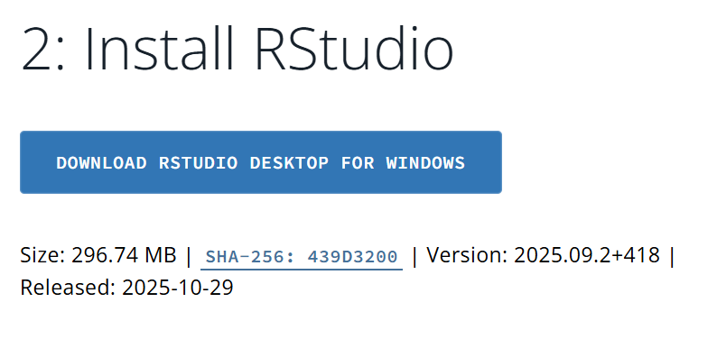

Antes de Comenzar
Para aprovechar al máximo este taller, es importante que tenga instalado R y RStudio en su computador. Es preferible que tenga estos programas instalados localmente, sin embargo, también puede utilizar un servicio remoto si tiene limitaciones para instalar software.
Instalación Local
Paso 1: Instalar R
R es el lenguaje de programación que utilizaremos. Descargue e instale R desde la página oficial de CRAN: https://cran.r-project.org/. Seleccione su sistema operativo (Windows, Mac, Linux).

Paso 2: Instalar RStudio
RStudio es el entorno de desarrollo integrado (IDE) gratuito que facilita el trabajo con R. Descargue la última versión para su sistema operativo desde la página de Posit: https://posit.co/download/rstudio-desktop/

Es importante instalar primero R y luego RStudio.
Usar R en la Nube
Si no puede instalar R y RStudio localmente, puede usar un servicio en la nube como Posit Cloud. Después de crear una cuenta gratuita, puede crear un nuevo proyecto y comenzar a trabajar con R directamente en su navegador.
Paquetes Necesarios
Durante el taller utilizaremos varios paquetes de R. No es necesario instalarlos todos de una vez, pero si desea tenerlos listos antes de comenzar, aquí tiene una lista de los principales paquetes que usaremos. En una de las sesiones, cubriremos cómo instalar y gestionar paquetes en R.
tidyversereadxllikertsjPlotquarto
Conjuntos de Datos
Los conjuntos de datos utilizados en los ejemplos y ejercicios están disponibles en la plataforma de datos abiertos de Bogotá, y también estarán disponibles en el repositorio de este proyecto.
Recursos Adicionales
Documentación Oficial
Libros Recomendados (Gratuitos en Línea)
- R for Data Science (2e) - Hadley Wickham & Garrett Grolemund (traducción al español aquí)
- ggplot2: Elegant Graphics for Data Analysis - Hadley Wickham
Comunidades y Ayuda
Soporte Técnico
Si encuentra problemas con la instalación o los materiales:
- Cree una nueva entrada en los Issues del repositorio de GitHub
- Revise la documentación oficial de R y RStudio